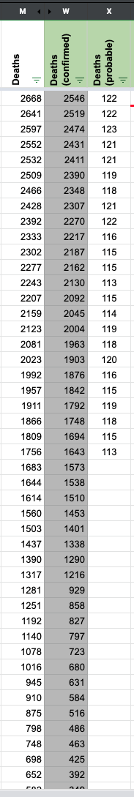
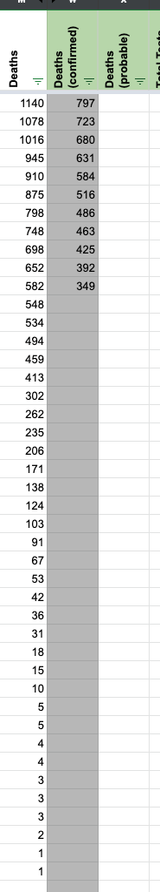

MD Historical Data update
Maryland [MD]
Historical Update from state graph
Cumulative fatality (total) | Cumulative fatality (confirmed) | Cumulative fatality (probable) 2668 | 2546 | 122 2666 | 2544 | 122 2646 | 2525 | 121 2625 | 2505 | 120 2596 | 2476 | 120 2562 | 2444 | 118 2538 | 2421 | 117 2501 | 2386 | 115 2458 | 2343 | 115 2417 | 2302 | 115 2379 | 2267 | 112 2341 | 2229 | 112 2306 | 2197 | 109 2274 | 2169 | 105 2221 | 2116 | 105 2198 | 2093 | 105 2164 | 2061 | 103 2122 | 2020 | 102 2090 | 1989 | 101 2040 | 1943 | 97 1991 | 1896 | 95 1935 | 1840 | 95 1881 | 1787 | 94 1834 | 1742 | 92 1788 | 1698 | 90 1739 | 1652 | 87 1692 | 1609 | 83 1643 | 1561 | 82 1580 | 1500 | 80 1520 | 1444 | 76 1476 | 1402 | 74 1424 | 1353 | 71 1372 | 1302 | 70 1323 | 1258 | 65 1276 | 1214 | 62 1226 | 1167 | 59 1168 | 1110 | 58 1099 | 1042 | 57 1045 | 990 | 55 1001 | 950 | 51 948 | 900 | 48 899 | 853 | 46 831 | 789 | 42 779 | 738 | 41 732 | 692 | 40 683 | 644 | 39 626 | 592 | 34 582 | 550 | 32 541 | 512 | 29 499 | 471 | 28 469 | 441 | 28 421 | 396 | 25 384 | 360 | 24 335 | 317 | 18 298 | 286 | 12 255 | 244 | 11 221 | 210 | 11 191 | 181 | 10 160 | 152 | 8 138 | 131 | 7 122 | 115 | 7 101 | 94 | 7 84 | 79 | 5 64 | 60 | 4 52 | 50 | 2 43 | 42 | 1 35 | 34 | 1 24 | 23 | 1 17 | 17 | 10 | 10 | 7 | 7 | 5 | 5 | 5 | 5 | 4 | 4 | 4 | 4 | 3 | 3 | 3 | 3 | 2 | 2 | 2 | 2 |
CTP Data  
Comments
Is this done @careeningspace ?
I pulled the data from the state website’s table and put it into a table in the Dev sheet